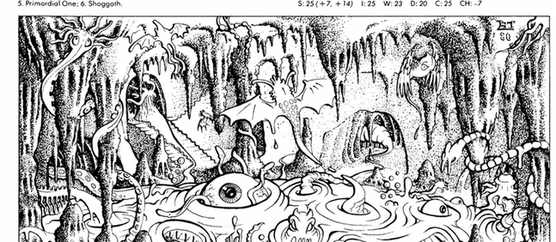
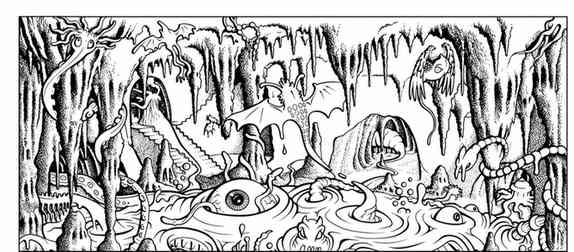

克苏鲁神话 · Cthulhu Mythos
旧日支配者与禁忌知识
克苏鲁神话源自 H. P. 洛夫克拉夫特及其同道作家的故事。旧日支配者在史前时代从星辰降临地球，先被非人种族崇拜，后来被上古诸神削弱、放逐或封印。人类从遗迹与残存种族中发现这些古老文明，并围绕它们建立宗教；各种邪恶法师和祭司则试图借助《死灵之书》等禁书取得超人的力量。
仅仅说出某位旧日支配者的名字，就有 5% 几率被它听见；若它听见，便会现身杀死说出名字的生物，或派遣仆从执行。自然生物对神话生物极为敏感，会发出警告并逃离。以下神话专章保留原书的 AD&D 生物数据与主持规则。
克苏鲁 · Cthulhu
混乱邪恶强大神，AC 2，移动 18／36 英寸，生命值 400，每轮 30 次攻击，每次 7–70 点伤害，魔法抗性 80%，需要 +2 或更好武器命中，并能再生每轮 10 点；位于主物质界，作为 16+ HD 怪物和 20 级魔法师行动。克苏鲁是百英尺高、章鱼头、橡胶鳞皮、弯爪大手足和蝙蝠翼的巨人。他能随意传送半英里，免疫水、寒冷与真空，并可从海中召来 10–100 个深潜者。
他的沉城拉莱耶隐藏在海下，非欧几何结构会迫使闯入者以 +4 修正作恐惧与疯狂豁免。若封印破裂，百英里内的一切生物都必须作死亡豁免，失败者会疯狂数月，月数等于其智力。克苏鲁通常在遇到完整的上古印记、另一位旧日支配者或拉莱耶重新沉入海底时退回巢穴。
阿撒托斯与克苏嘉 · Azathoth 与克苏嘉 Cthuga
阿撒托斯 是混乱中立的宇宙中心，AC −2，生命值 400，魔法抗性 95%，位于星界；无移动，能以 20 次攻击造成每次 3–18 点伤害。它是盲目而无心智的混沌质量，周围有吹笛者；千英尺内的生物必须对疯狂作豁免。
克苏嘉 是混乱邪恶的火元素主宰，AC −6，生命值 400，移动 36 英寸，位于火元素位面；火焰黏体可在百码内制造 5–50 点热伤害，每轮召来 1–20 个火焰生物，只有 +3 或更好武器能伤害它。火焰生物极罕见，每次 1–4 个，AC −2、16 HD，靠热 aura 和 2–20 点攻击作战。
深潜者、伟大种族、哈斯塔与伊塔库亚
深潜者 是克苏鲁的鱼人信徒，稀有，每次 1–100 个，AC 3，4 HD，通常在巢穴中出现；两爪各造成 1–4+2 点伤害。他们是两栖且近乎不死的种族，并会与邪恶人类通婚。
伟大种族 极罕见，每次 1–10 个，AC 5，8 HD，守序中立，拥有 280 点灵能。它们是古老而高度科学化的锥形生物，能穿越时间并以寄居方式保存文明。
不可言者哈斯塔 Hastur 是混乱邪恶强大神，AC −2，生命值 400，移动 36／36 英寸，魔法抗性 50%，以 20–200 点双触手攻击；他有两百条触手，能传送、每轮再生 5 点、召来 2–20 个拜亚基，并制造恐惧。他是克苏鲁的异母兄弟。
风行者伊塔库亚 Ithaqua 是混乱邪恶半神，AC 2，生命值 250，位于风元素位面；13 级牧师、15 级战士、12 级魔法师／幻术师。它像雾雪组成的巨大人形，控制远北天气，以人类献祭为乐，并能带走或追捕冒犯它的人。
米·戈、奈亚拉托提普、原初者与修格斯
米·戈 Mi-Go 是来自犹格斯的真菌生物，极罕见，每次 2–12 个，AC 4，5 HD，免疫寒冷、黑暗与真空，能飞越星际；它们不说话，以钳击交流。
奈亚拉托提普 Nyarlathotep 是混乱邪恶弱等神，AC 2，生命值 200，魔法抗性 25%，可变形并以本体外貌预示旧日支配者归来；它能以言语魅惑人类、人形生物和非魔法动物。
原初者 Primordial Ones 极罕见，每次 1–8 个，AC 6，8 HD，守序邪恶，免疫热与寒冷，拥有 206 点灵能；它们是有高级科学的外星种族，憎恨其他智慧生命。修格斯 Shoggoth 极罕见，每次 1–4 个，AC 1，20 HD，移动 9，魔法抗性 30%，免疫虚弱、麻痹和魅惑；这些近乎透明的巨大变形黏体最初是原初者的仆从，后来反叛并摧毁了主人。
莎布·尼古拉丝与犹格·索托斯
莎布·尼古拉丝 Shub-Niggurath 是混乱邪恶弱等神，AC 4，生命值 400，魔法抗性 95%，本体是直径百英尺的灰色污秽肉池。它每轮可生成 1–100 个小怪物，感知千英尺内的敌人后每轮生成一个守卫，随机为拜亚基、深潜者、伟大种族、米·戈、原初者或修格斯；近身者会被触手拖入肉池，力量值决定逃脱几率。
犹格·索托斯 Yog-Sothoth 是混乱邪恶强大神，AC −2，生命值 400，移动 18 英寸，魔法抗性 50%，免疫魅惑。它以彩虹球体集合出现，能在任意时间和空间进出，并召来旧日支配者的后裔；本体在主物质界时是触手、腿和有柄器官组成的巨大团块。
上古印记 Elder Sign 是灰绿五芒星石，可完全防护灵能攻击，强力展示时能驱逐修格斯、拜亚基、火焰生物、深潜者和米·戈，并对更强大的主人提供相当于 +6 防护戒指的防御；其 AC −2，只有魔法或不可思议的力量才能摧毁。
《死灵之书》 · The Necronomicon
阿卜杜勒·阿尔哈兹莱德在沙漠独居十年后写下《阿尔·阿齐夫》，后世称为《死灵之书》。书中记载旧日支配者的史前崇拜、被上古诸神放逐的过程及其即将归来。五级以下角色阅读时有 40% 几率变为混乱阵营或疯狂；读者每高于四级一档，几率下降 5%。只有智力 18 的魔法师有机会理解其中召唤术，每级从六级开始有 5% 几率；施放大型召唤术有固定 30% 几率发疯，且召来的存在未必受控。

